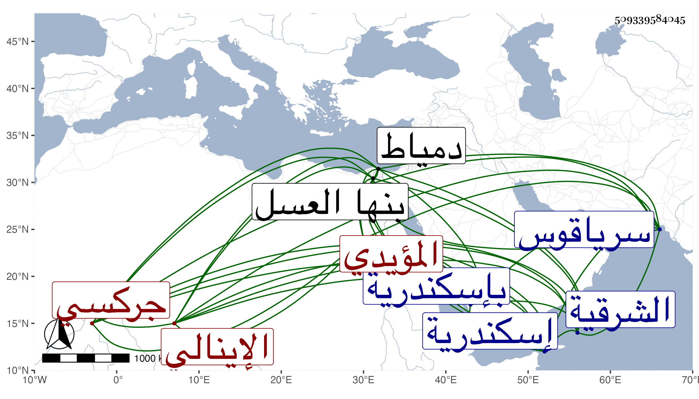

0902Sakhawi.DawLamic.ITO20230111-ara1.EIS1600.509339584045
Biography ID: 509339584045
1131
يلباي الإينالي المؤيدي . جركسي الجنس الملك الظاهر قدم به إينال ضضغ الأمير الشهير الذي صار بعد إمرته تاجر المماليك وإليه تنسب الإينالية كيرشباي فاشتراه المؤيد منه وجعله في طبقة الرفرف ثم صار بعده خاصكيا وكان يقال له في ابتدائه يلباي تلي يعني المجنون لجرأة كانت فيه وحدة مزاج ، واستمر خاصكيا وأقطعه الأشرف برسباي ثلث قرية طحورية من الشرقية ، ثم نقله ابنه العزيز لقرية بنها العسل عوضا عن أيتمش المؤيدي ، وجعله الظاهر جقمق ساقيا ثم أمره عشرة وصيره من رءوس النوب ، فلما اختفى العزيز واتفق قبضه على يده وإحضاره سر الظاهر كثيرا وأقطعه زيادة على ما معه سرياقوس وصيره من الطبلخاناة فدام حتى قبض عليه المنصور في جملة المؤيدية وحبسه بإسكندرية وأخرج أقطاعه ثم أطلقه الأشرف وأرسله إلى دمياط بطالا ثم أعاده بعد أيام ، ولم يلبث أن قتل سونجبغا اليونسي الذي كان استقر في أقطاعه فرجع إليه ثم عمله أمير آخور ثاني بعد موت خيربك المؤيدي الأشقر ثم قدمه في أواخر دولته فلما تسلطن خجداشة الظاهر خشقدم نقله إلى حجوبية الحجاب بعد بيبرس خال العزيز ثم إلى الآخورية الكبرى بعد برسباي البجاسي ثم إلى الأتابكية بعد موت قانم فلما مات الظاهر ارتقى إلى السلطنة في آخر يوم السبت وقت المغرب عاشر ربيع الأول سنة اثنتين وسبعين ولقب بالظاهر أبي سعيد ولم يكن له منها سوى الاسم لغلبة خير بك الظاهري خشقدم الدوادار الثاني على التدبير والأمر والنهي ولكن لم تطل مدته بل خلع قبل تمام شهرين بالظاهر تمربغا وحمل إلى إسكندرية فشجن بها ويقال أنه لم يتفق لأحد من ملوك الترك كبير ممن مسه الرق أنه خلع في أقل من هذه المدة وقبله المظفر بيبرس الجاشنكير خلع قبل استكمال سنة ، واستمر في محبسه حتى مات في ليلة الاثنين مستهل ربيع الأول سنة ثلاث وسبعين وسنه نحو الثمانين ، وكان ضخما حشما كثير السكون والوقار متدينا وجيها في الدول لم ير مكروها قط إلا سجنه أيام المنصور ، سليم الفطرة جدا طارحا للتكلف في شئونه كلها لم يكتب ولا قرأ موصوفا بالبخل مع مزيد ثروته ومن يوم تسلطن أخذ في النقص وظهر عجزه والظاهر أنه لو دام لما حصل به كبير ضرر لقلة أذاه ومزيد صفائه ومحبته لنفع المسلمين فلله الأمر .
